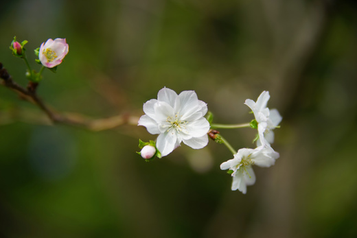
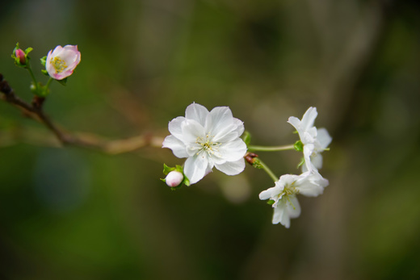

梅吉のお薬生活、始まりました・・・ [病院]
３連休初日の7日、梅吉の血液検査の為朝絶食をさせて病院に行ってきました。
梅吉に朝抜きなんてできるんだろうか・・・とずいぶん心配＆かじられるんだろうな、
夜眠れないんだろうな・・・と色々諦めていたのです。
が！梅吉は聞き分けの良い賢い子でした〜(꒦ິ⌑꒦ີ)
夜中のていていほりほりが始まった時「今日は食べられないの！」と言い聞かせ
抱っこして一緒に布団をかぶるとそのまま寝てくれました。
起床後もごはんをもらえない空気を察しているのかいつもの様に
「ごはん〜！！ごはん〜〜〜！！！」とせがんできません。
かといってふてくされる訳でもなくいつも通りにじゃれたり外を見たり
キャリーを出してくると無邪気に中に入って遊んだり・・・
あーーーー！良い子すぎて思い出しても涙でちゃう！！
診察室で不安げに待つ梅吉さん。おでこの毛がボソボソです・・・

恒例、先生に向かって「シャーーーッ」^^;
採血をして待つ事２０分くらい。
検査結果は残念ながら中性脂肪の値がとても高い・・・
他項目の悪い値も中性脂肪値↑に引っ張られて上がる数値とのこと。

興味がある方はクリックして見てくださいね。画像が大きくなります。
人間の場合は生活習慣、主に食生活の改善となるのですが
梅吉の場合はダイエット前より中性脂肪値が上がっている、年齢、
を考えると食生活云々ではなく脂肪を上手く代謝して行く事ができない体質なんですって。
脂肪を代謝できないと筋肉を消費、筋力低下→体重減少と不健康な痩せ方をして体が弱ってしまう。
中性脂肪値が高いと動脈硬化など余病も発症しやすいのでお薬でコントロールして行きましょう
ということになりました。
お薬がうまく作用して数値が安定しても薬は一生ずーっと続けていきます。

おとーさんも中性脂肪値高いから遺伝かしらね・・・(*>艸<)

診察が終わるとさっさとキャリーヘIn！
早く帰りたくてたまらない様ですww
採血ついでに予防接種も済ませたしおうちへ帰りましょう！！

病院疲れで寄り添って眠るワタクシと梅吉（自慢！！！）=´ᆺ`=
一生お薬生活になってしまいましたが（今のところ）重大な病気ではないのが救いでした。
お薬もフードに混ぜて問題なく摂取できております。
あまり楽しくない話題ですが「病院」というカテゴリーも作りました。
自分自身への覚書でもあるので時々登場する記事になりますが
よろしくお付き合いくださいねー＾＾
 ↑ガブッと一押し↑
↑ガブッと一押し↑
梅吉を病院へ連れて行った日はワクチン後の様子も見つつ家でのんびり。
が、８日９日はあちこちお出かけしてきましたよ。
その一つ植物園。ローズフェアが開催中でした＾＾
秋バラ。５割くらいのバラが開花し始めていました。
見頃は今週末くらいかなぁ。
コスモス。は群生に限りますよね。

十月桜。
ハナミズキ、実をつけ始めました。
盛りを迎える花、枯れゆく前に実をつける木、どうして今頃？の桜、
秋の植物園はそれぞれがいろんな準備をしている様です＾＾
梅吉に朝抜きなんてできるんだろうか・・・とずいぶん心配＆かじられるんだろうな、
夜眠れないんだろうな・・・と色々諦めていたのです。
が！梅吉は聞き分けの良い賢い子でした〜(꒦ິ⌑꒦ີ)
夜中のていていほりほりが始まった時「今日は食べられないの！」と言い聞かせ
抱っこして一緒に布団をかぶるとそのまま寝てくれました。
起床後もごはんをもらえない空気を察しているのかいつもの様に
「ごはん〜！！ごはん〜〜〜！！！」とせがんできません。
かといってふてくされる訳でもなくいつも通りにじゃれたり外を見たり
キャリーを出してくると無邪気に中に入って遊んだり・・・
あーーーー！良い子すぎて思い出しても涙でちゃう！！
診察室で不安げに待つ梅吉さん。おでこの毛がボソボソです・・・

恒例、先生に向かって「シャーーーッ」^^;
採血をして待つ事２０分くらい。
検査結果は残念ながら中性脂肪の値がとても高い・・・
他項目の悪い値も中性脂肪値↑に引っ張られて上がる数値とのこと。

興味がある方はクリックして見てくださいね。画像が大きくなります。
人間の場合は生活習慣、主に食生活の改善となるのですが
梅吉の場合はダイエット前より中性脂肪値が上がっている、年齢、
を考えると食生活云々ではなく脂肪を上手く代謝して行く事ができない体質なんですって。
脂肪を代謝できないと筋肉を消費、筋力低下→体重減少と不健康な痩せ方をして体が弱ってしまう。
中性脂肪値が高いと動脈硬化など余病も発症しやすいのでお薬でコントロールして行きましょう
ということになりました。
お薬がうまく作用して数値が安定しても薬は一生ずーっと続けていきます。

おとーさんも中性脂肪値高いから遺伝かしらね・・・(*>艸<)

診察が終わるとさっさとキャリーヘIn！
早く帰りたくてたまらない様ですww
採血ついでに予防接種も済ませたしおうちへ帰りましょう！！

病院疲れで寄り添って眠るワタクシと梅吉（自慢！！！）=´ᆺ`=
一生お薬生活になってしまいましたが（今のところ）重大な病気ではないのが救いでした。
お薬もフードに混ぜて問題なく摂取できております。
あまり楽しくない話題ですが「病院」というカテゴリーも作りました。
自分自身への覚書でもあるので時々登場する記事になりますが
よろしくお付き合いくださいねー＾＾
梅吉を病院へ連れて行った日はワクチン後の様子も見つつ家でのんびり。
が、８日９日はあちこちお出かけしてきましたよ。
その一つ植物園。ローズフェアが開催中でした＾＾
秋バラ。５割くらいのバラが開花し始めていました。
見頃は今週末くらいかなぁ。
コスモス。は群生に限りますよね。

十月桜。
ハナミズキ、実をつけ始めました。
盛りを迎える花、枯れゆく前に実をつける木、どうして今頃？の桜、
秋の植物園はそれぞれがいろんな準備をしている様です＾＾

カフェオレ色の梅吉

梅吉 2023年8月10日 永眠


梅吉と出会った譲渡会

犬猫の理由なき殺処分ゼロ
妄想広告
UMEKICHI 光

爆発的に早い！
時々攻撃的！
Thanks to Mr.Boss365
爆発的に早い！
時々攻撃的！
Thanks to Mr.Boss365

梅吉さん、なんて賢い！
言い聞かせても～しばらくするとまた言い出すほうが普通じゃないかな。
良い子で、よかったですねえ。
お薬がずっと必要というのはちょっと大変ですけれど、重篤な状態じゃないのは何より。
梅吉さん、いい子だから大丈夫ですね＾＾
秋バラ、綺麗ですね～＾＾
by sana (2017-10-10 19:26)
梅吉さん♪聞き分けが良くて賢くて！！
本当に良い子ですね(*^_^*)
お薬は一生ですか！
ですがそれでコントロール出来るならいいですね♪
お薬も飲んでくれるし、いっぱい
長生きしてもらいましょう♪
by きぃ (2017-10-10 19:37)
梅吉さん、お薬生活ですか！
先生にシャーは怖かったのですね(^^)
by ma2ma2 (2017-10-10 19:46)
梅吉さんいい子ですね~。お薬もフードに混ぜられるんなら問題ないですね。おかーさんと眠ってる姿も、ますます愛おしくなりますね。
ところで前回皆さんがIDで悩んでらしたので参考までに、ICチップは普通のよりは太いですが注射で入れます。うちでは避妊去勢手術と関係なく、突然連れて行ってその場でちゅ! っと入れてもらいました。8匹に入れて今まで何も問題はありません。違和感もないようで掻いたりもしません。ただ読み取り機は保健所や獣医さんにしかないので、一般の方が保護してくださった場合を考えると、首輪が大丈夫な子には首輪に電話番号を入れるのが、一番手っ取り早いですよね。
by zombiekong (2017-10-10 20:43)
梅吉さん、なんていい子なんでしょう♪
いろんな体質があるのですね・・・。
お薬飲み続けるのはちょっと大変ですけれど、一病息災、健康に気を配ったり定期的に病院へ行くことでより長生き出来ると思います！！
や～ん、頭くっつけて仲良しさん。ウチでは絶対ないのでうらやましい～(#^^#)
ウチのも外耳炎で耳洗浄に通院中。
週１回がようやく10日1回になり、何とか2週間に1回まで持っていきたいと頑張ってます。病院、心底疲れますもんね。猫も人も。
by ゆきち (2017-10-10 20:53)
梅吉さん、お薬生活ですか。。。
お互い頑張りましょう。^^;←高血圧症
寄り添う写真、いいなあ♪
秋バラやコスモス、綺麗ですね。^^)
by yes_hama (2017-10-10 20:56)
梅吉さん、薬でいつまでも元気に過ごして下さいね。
「シャーーーッ」も、なんかいいですね(^-^;
寄り添う写真が羨ましいです(^^)
by riverwalk (2017-10-10 21:06)
梅吉くん、いい子に出来たのね。
思い出しても涙だなんて・・・私ももらい泣きしちゃう。
お薬もフードに混ぜて大丈夫だなんて、親孝行です。
それだけ食欲もあって元気だってこと！
お薬で数値をコントロールして長生きしてもらわなくちゃ。
病院疲れで寄り添って眠る2人。お互いの温もりに安心しているんだね。
支え合っているんだね(#^^#)
by emi (2017-10-10 21:36)
お薬きちんと飲んでくれるのは助かりますね。長い治療になりますね。上手に付き合っていきましょうね。お利口さんでしたね
by みぃにゃん (2017-10-10 21:43)
梅吉さん、お利口さん過ぎます(°_°)
うちの子が梅吉さんの１/４でもお利口さんであってくれたら・・・(ｰ ｰ;)
薬で数値が早く落ち着きますように(_ _)
梅吉さんと寄り添う写真、く、悔しくなんかないです´д` ;
by ニッキー (2017-10-10 22:00)
梅吉君、ホントにお利口さん。
えらかったね！
ところで、うめむすさんも、中性脂肪が高めです（笑）
ついでに、血圧高めです。
うめむすさんは「降圧剤」を処方されています。
一生お薬生活であります。
そして、うめむすさんもお利口さん、
では、まったくありません。
by うめむす (2017-10-10 23:17)
梅吉さん賢いですねぇヽ(*´∀｀)ノ
やっぱ茶トラは大きくなる子が多いんですねぇ＞＜；
うちも茶々さん、気を付けなければ…！！
by sumi-cyan (2017-10-10 23:35)
おぉぅ、病院おつかれさまでした。
いい子にしていたのですね、エライぞ！
うちの坊主も先天性の尿管異常があって、要・定期的なシッコ検査で
そろそろ連れて行かねば・・・の時期です。
病院は、にゃんこももちろんですが、飼い主さんも疲労しますよね^^;
開花も季節様々で、秋の花もいいですね。
（時々、冬にもツツジやタンポポを見かけますが・・・）
by Ja-Kou66 (2017-10-11 00:20)
梅吉さんお疲れ様でした。
お利口さんですね(^^
by ryang (2017-10-11 00:45)
梅吉さん、ほんとにいい子だね。
可愛いよー♡
ちぃさんと寝てる写真が、特にいいです＾＾
うちは、私の方からあかりを抱っこして寝るなんて
無理だろうなぁ…(´；ω；`)
ニャンコも色んな体質があるんですね。
お薬、フードと一緒に食べられてよかったです＾＾
秋にもバラが見られるんですね♪
by マーヤ (2017-10-11 00:45)
うちの連中に爪の垢を煎じて飲ませたいです。
一生お薬生活になってしまったのは残念ですが
ご飯と一緒に食べてくれる良い子で良かったですね。
無理に口を開けて飲ませてたら、嫌われちゃいますもんね＾＾；
by ぽちの輔 (2017-10-11 07:34)
梅吉さん、決めるときはバシッと決めてくれますね、偉いです!
薬生活でも、元気に過ごしてくれると嬉しいですね(^_^)
by kou (2017-10-11 07:44)
ご心配ですね…。
でもきちんと診断が下ったこと、その点は良いのかな。
ごはんのようにお薬を飲めば健康で普通に暮らせるのですね。
王子の担当医もこういうことを見つけてくれるのかなぁ…と
心配になりました。
by も〜 (2017-10-11 09:55)
梅吉君、ゴハン抜きでもワガママいわないなんて
なんて良い子なの！
そっかー、お薬生活になったのね。でもちゃんと管理していけば
大きな病気も予防できるよね^^
あおうみも、来年のワクチン接種の時、一緒に血液検査だな。
恒例のシャーｗｗ
笑いました^^
by リュカ (2017-10-11 10:42)
梅吉さん、いいコね。
病院は怖いもの、帰ってくると、ぐったりするの、わかります！
by nachic (2017-10-11 11:30)
梅吉くんいい子だったのですね( ；∀；)
そうか～お薬ずっと続くのか・・・でも体質なら中性脂肪数値が高めが梅吉くんの正常値なのでは～？なんて思ってしまいました。運動食事で頑張ってみてダメだったら薬って訳にはいかないのですかねぇ(-"-)ずっと薬でコントロールってちぃさんも辛いですよね。梅吉くんナノとおない年だし他人事に思えません(T_T)
by palpal (2017-10-11 14:46)
梅吉さん、聞き分けが良くて賢くて！！お利口さんですね！！
お薬は一生なのですね。。。先生とも仲良くお付き合いしなくてはいけないですね～～（＾＾;
ちぃ さんもお疲れ様です。
by Raccoon (2017-10-11 20:02)
心配してお疲れのちぃ様と、お利口
だった梅吉しゃんの仲良しショットに
思わず涙が。。一病息災という言葉も
ありますし、改めてちぃ様の深い愛を
感じました。
by うっかりくま (2017-10-11 21:52)
梅吉さん、おりこうでしたね。
ちぃさんが苦悩していたことが、伝わっているのですね。
分かるのですね〜
凄いです。
二人の寝姿、ご主人様良いスナップショットです。
by kiki (2017-10-12 03:06)
梅吉さん、お疲れちゃんです。
一生お薬生活は大変だけど、それで長生きできるならいいじゃない？
ウチだって寄り添って寝るもん！！→負けず嫌い
by じゅらまろ (2017-10-12 12:57)
sanaさん＞一応は寝たものの後すぐに起きて「ごはんー！！」って
言われるんだろうな・・・と思いながら眠りに落ち・・・
気づいたら起きる時間で梅吉も側にいてびっくり！！でした。
いかにも健康そうな梅吉がお薬生活になるなんて夢にも思いませんでした・・・orz
秋バラ、
私も大阪に移り住むまでこんなに見事とは思っていませんでした。
名残程度のものがちょぼちょぼ咲くのだろうと・・・^^;
きぃさん＞そうなんです・・・私もまだまだ梅吉をわかっていないなと反省^^;
が、今回はうまく出来ましたが次回はどうでしょうかww
お薬とは一生のお付き合いになってしまいました。
梅吉も私もストレスにならない様に工夫して行きたいと思います！
ma2ma2さん＞「シャー」は
「わしにてをだすとはなにごとや！！」とのお怒りで
あまり怖がっていない様な・・・^^;。先生もびっくりなんです^^;
zombiekongさん＞お薬は錠剤とカプセルで砕いたりお湯に浸して溶かしたり
とそれなりに手をかけてフードに混ぜています。
ウェットに切り替えも考えたのですが管理の面では断然カリカリが楽なので・・・^^;
ICチップの情報ありがとうございます。
全身麻酔で入れると思っていたのですが「素」の状態で入れられるのですね！！
でも梅吉は暴れそうだな・・・ゴンちゃんもその方法で？
だったら梅吉もいけるかな・・・(*>艸<)
とりあえず首輪の方向で検討中でーす＾＾
ゆきちさん＞体重を落とした時点でこの問題は解決だと思っていたので
ちょっとショックではありました。。。
が、かかりつけ医に梅吉の状態を常に把握してもらえるから良し！と
思うことにしましたよ〜。
こてつくんの外耳炎も長引いていますね。
カラッとした秋晴れの日が少ないのも完治を遅らせている一因でしょうか。
病院通いは猫も飼い主も「忍」の一字ですね (-_-メ)
お互い耐えましょう・・・
yes_hamaさん＞通院＆お薬生活なのですね！梅吉のお薬友＾＾
アズ氏共々スモチーを食べ過ぎてはいけませんよーなんて
進言してみたりして・・・(*>艸<)
今の季節は紅葉の前に、お花頑張る！！季節でしょうか。
夏場より色とりどりで楽しい植物園歩きでしたよー。
riverwalkさん＞病気というより薬で健康管理、と思っています＾＾
診察室で梅吉が「シャーーーーッ」と言う度
喜んだり写真を撮りまくったり変な夫婦だなーと病院で思われていそうです^^;
emiさん＞emiさんのコメントでもウルっときちゃいましたよ・・・
最近ただでさえ涙腺がゆるいのに梅吉の事となるとなおさらです(꒦ິ⌑꒦ີ)
食欲もあるし（お薬ふりかけても食べちゃうんだな）
元気で走り回るし「持病持ち」と言う言葉がとても似つかわしくない梅吉ですw
お薬は病気の治療ではなく健康管理の一環と思っています＾＾
みぃにゃんさん＞梅吉にも私にも負担の少ない様にお薬生活を
続けて行きたいな、と思っています。
梅吉のお薬への抵抗があまりない様で一安心です！！
ニッキーさん＞梅吉、やれば出来る子でした＾＾
にゃんずさんもここ一番の時にはきっと・・・
今回処方されたお薬はフードと一緒に摂取できているので
このお薬が効くことを願っています。
お薬を変えて「イヤイヤ」されたら大変ですから・・・
寄り添う写真、ふふふふふ・・・・・
うめむすさん＞あらあら、うめむすさんはいろいろ「ちょいワル系」と_φ(･_･
「ラーメンばかり食べない！揚げ物は程々に！！お酒は適量！！！」と
奥様ばりのことを口走りそうですわwww
それは冗談として、お薬で数値が安定するなら一安心ですよね。
今後もお慈愛なさってくださいませ、お薬生活の先輩(^_－)☆
sumi-cyanさん＞そうそう、茶々君も気をつけてあげてくださいね！
Ja-Kou66さん＞なんとなく飼い主がナーバスになっていた空気を読んだのでしょうか。
それはそれでかわいそうだったかな・・・^^;
定期通院しているのはちゃーくんでしょうか？
家の先代猫は腎臓が悪く、すぐに膀胱炎をおこし
尿管には細かい砂状の結石がつまる・・・という大変な猫でした。
ちゃんとキレイなおしっこが一定量でると
猫トイレの前で歓喜するような日々でした(^▽^;)
これから寒くなるとおしっこ系の病気のある猫にとっては要注意の季節ですよね。
ちゃーくん、安定した状態がず〜〜〜〜っと続きます様に！！
ryangさん＞梅吉、がんばりました〜＾＾
絶食させた影響もあるのか一服盛ったごはんでも完食でした(⌒_⌒;
マーヤさん＞ありがとうございます！！
私と梅吉の元の写真は私の全身が写っていたのですが
それだと行き倒れているおばちゃんとにゃんこ、だったのでトリミング (^▽^;)
一気にほのぼの度がアップしました(^_－)☆
元気一杯の梅吉がこんな体質だなんてねぇ・・・・
他には何もないことを祈るばかりです。。。
秋のバラも見事なんですよ〜。
私の出身地札幌では初夏にしか咲かなかったので得した気分です♪
ぽちの輔さん＞お口を開けて放り込む、慣れると楽だし簡単！
と見たり聞いたりはしていますが試す勇気がなくて・・・^^;
おそらくむちゃくちゃ暴れるだろうなぁ・・・嫌われるのも嫌だしーーー(꒦ິ⌑꒦ີ)
幸いにもなんでもこだわりなく食べるので（いやしいと言わんといて）
粉にして、あるいはぬるま湯で溶かしてフードに混ぜると問題なしでした。
この点だけは良かったな・・・と( ^ω^ ）
kouさん＞梅吉、やる時はやる漢でした！！見直したぞ！！！
ただし・・・次の絶食が上手くいくかは不明です^^;
病気で薬、ではなく健康管理上の薬だと思うことにしています。
異常も見つけやすくなるかな・・・とも思っていますよ＾＾
も〜さん＞そうなんです。早めに見つけてあげることが出来て良かったです。
お薬も病気治療のためというより、健康を維持してく為の薬と思っています。
事実、お薬2種のうち1種はEPA、血液をサラサラにする青魚成分、
つまりサプリメントなんです＾＾
まずは異常数値を落ち着かせて後は良い状態を保って行きたいです。
一度王子も血液検査をしても良いかもしれませんね！！
リュカさん＞梅吉は本当に性格が良くて素直で良い子なのよーーー！！！
やりたい放題な様でいてちゃんと空気も読んでいるし・・・( ；∀；)
（もう親バカ全開だけど許してね^^;）
ちゃんとお薬で管理して行けば老にゃんになっても健康でいてくれるはずと
思っています。定期的に検査があれば異常も見つけやすいしね＾＾
あおうみ２にゃんさんもぜひ血液検査を！ついでにおしっこ検査もね！！
猫は今までに梅吉を含めて三匹目ですが、みなにゃん見事に定期通院組です^^;
それだけ猫の神様が私を「任せて安心！」と信頼してくれているんだって
思うことにしていますわwww
次回の診察時も「シャー」写真撮るよ＾＾
nachicさん＞人間が自分の検査に行くのだって疲れるのに
猫が、何されるかわからない！と思っている病院に行くのって
さぞかし怖いんでしょうね・・・
そんな気持ちも察して飼い主もちょっとグッタリの病院後でした^^;
ただ、梅吉は一寝入りした後は元気一杯、お目目をキラキラさせながら
じゃらし遊びを楽しんでおりました。本当にいいコなんですー！！(≧▽≦)
palpalさん＞そう、びっくりするくらいいい子・・・( ；∀；)
検査値が正常値の範囲内で高かったら良かったんだけど
ばーんと突き抜けているからねぇ・・・^^;
ダイエットは試した後だしこれはもう薬でしょー！となりました。。。
お薬は健康維持のためのものとしてがんばるわ！！
ナノくんきなこちゃんも年に一度のおしっこ検査と血液検査は
オススメしますよ。
保険きかないから検査料高いけどね (-_-メ)
Raccoonさん＞梅吉本当にいい子でした・・・
次回絶食時もそうであって欲しいものです (^▽^;)
藤井ちゃん（獣医さん(*>艸<)）良い先生なんですよ〜＾＾
梅吉がシャーって言っても「怒らんといてや〜」って笑ってくれるし
きちんと説明してくれるし。
そのほかのスタッフの方々も気持ちの良い方ばかりで
病院がなんだかな・・・じゃないのは本当に助かっています＾＾
うっかりくまさん＞前日の夜からの気疲れもありちょっとグッタリでした。
子供時代を含めて私が関わってきた猫は
なぜかみな病院のお世話になる子ばかり^^;
なので今回の梅吉の診断も「ああ、またですか？猫の神様！」と・・・
ちょっと手のかかる子はあなたにお願い！と見込まれている様ですww
「この病気は引き受けたので、後は何もなしで」と交渉中です(*>艸<)
kikiさん＞梅吉はやりたい放題でがさつな様でいて
結構繊細に周りを見ているな・・・と思うことがあります。
「意外に気を使っている猫」by ゆきちさん風 デス。
私たち夫婦と梅吉との相性がバツグン！！ということでもありましょう(*>艸<)
おっとが撮った写真、行き倒れ状態の私の全身をトリミングしたら
使える写真になりましたwww
じゅらまろさん＞そうそう！！お薬は長生きの第一歩(｀_´)ゞ
ちゃんと飲ませて長生きしてもらって
いっぱい添い寝するんだもん！！（負けないっ）
by ちぃ (2017-10-12 15:18)
先生の頑張りに、拍手！！！
気を送ります。シャー！
元気になってね。^ ^
by KENT0mg (2017-10-12 19:29)
カラになった骨壺のお返事を書いてなかったことに気づいて^^;
こっちに書きますねー(笑)
今回は、墓石屋さんが持ち帰ってくれたのですが
霊園には、骨壺を回収するスペースがあるみたいですよ^^
by リュカ (2017-10-12 19:33)
KENT0mgさん＞おお！
その気で血液中の中性脂肪は吹き飛んで行くことでしょう＾＾
リュカさん＞そうなんだ、決まり事は特に無いのねー。
家に持ち帰っても困っちゃうもんね！
あ、思い出の品にする方もいるのかな？
私は「いりません」派ですけどwww
by ちぃ (2017-10-12 21:31)
おつかれさま・・・よくがんばったのね・・・良い子でせつなくなります(ﾉω･､) ｳｩ･･･
by Ginger (2017-10-13 15:56)
Gingerさん＞梅吉、がんばりました(꒦ິ⌑꒦ີ)
お薬生活になっていましましたが誠心誠意お世話して
尽くしてゆきます！！
by ちぃ (2017-10-13 20:04)